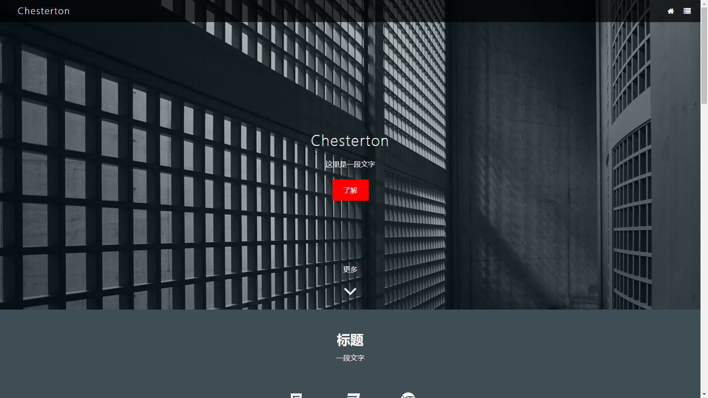
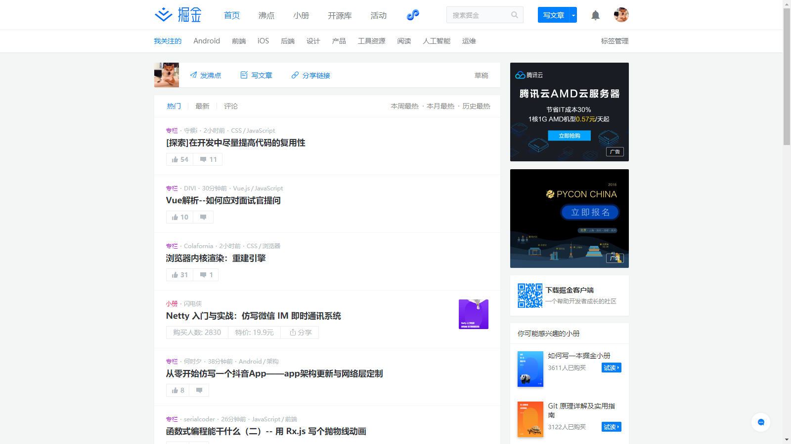
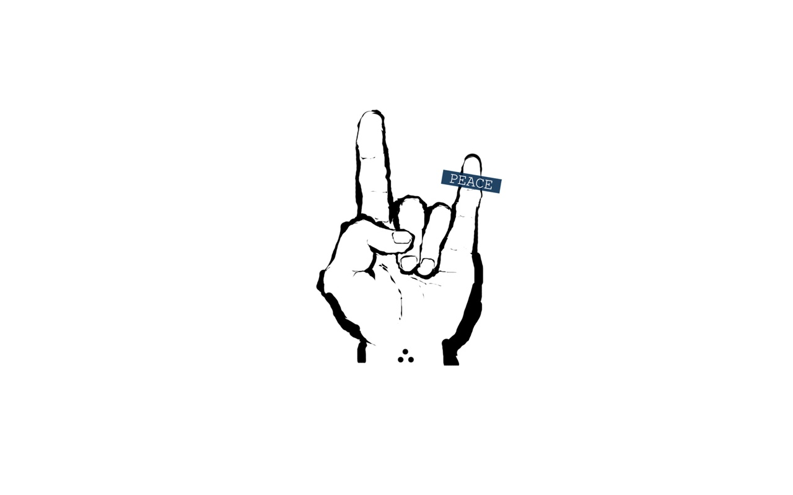

起初
其实一直有想做一个个人的博客，也尝试的写过一个扁平化的博客模板，虽然最后也写得七七八八，but…
出来的效果还是一般般,像这样 ↓ 友情链接

似乎有点太黑色、太压抑了
后来
10月了呀，大四的我也应该想想找工作这种事，找工作也就免不了面试，参加面试的话呢
那是当然要笔试，所以啊，心里慌得一批的我各种百度、谷歌的找→“前端面试题 xxx真题 2018”这样的关键字
倒是找到不少，找的过程中发现一个很有意思的社区 掘金

如此小清新的UI，嗯
first
咳咳，开始说说正事了，现在看到的这个博客是用Hexo+GitHub搭建的
Node.js和Git的环境还是必须的
那么我是怎么看到这个博客框架的呢？
因为我在掘金上找面试题目的时候恰好看到了一个很好看的博客高闻灿的博客 | VG Blog，然后访问博主的GitHub主页发现了Hexo
嗯！真香！
具体的搭建方法可以上Hexo的官网，作者是台湾的，所以官方的中文文档的可读性还是不错的，有疑问的可以看看以下我找的一些教程
hexo从零开始到搭建完整 - Visugar - 博客园
下面这个比较详细，有提到插件的使用等等
GitHub+Hexo 搭建个人网站详细教程 - 知乎专栏
end
